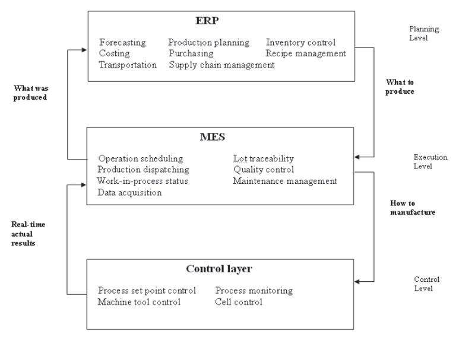
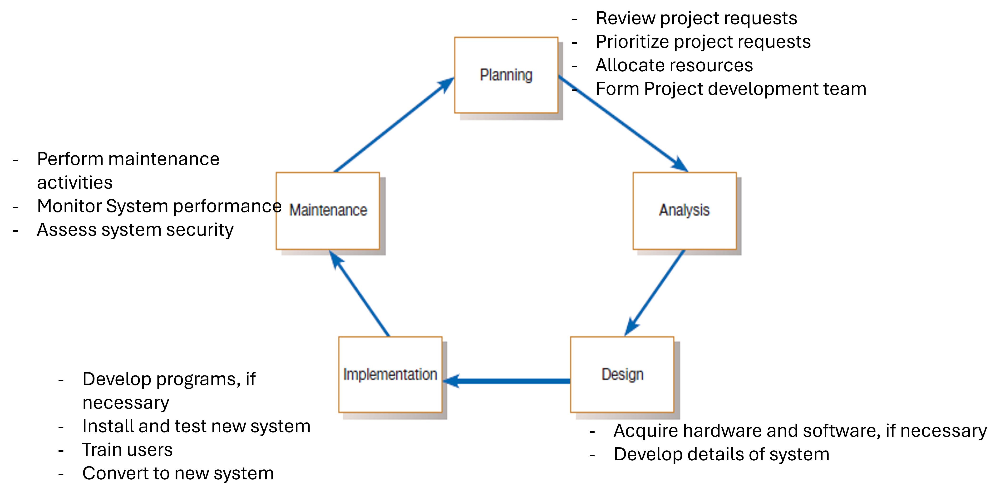

Production Information System
Chapter 1: Introduction to IS Development
ISE Department - Year 4/ Level 7
2025-08-24
Outline
• Importance of Information
• Information System definition
• A hierarchy of information systems
• Information System Development
• Some Key Application Areas of an industrial Information System (IIS)
1.Importance of Information
Every aspect of management in the modern age relies heavily on information to thrive
Changing circumstances and environments have necessitated the need for the proper dissemination of information at various levels of management
Information Technology (IT) helps manage that asset
• IT enables firms to integrate the decision functions that exist in the myriad of subsystems required to manufacture and distribute a product
• These subsystems include sales, purchasing, production planning, quality control, process control, and supply chain logistics
1.Importance of Information
• An organization operates more efficiently and better manages its resources when activities are clearly coordinated among the subsystems of the organization
• If the information flows are unavailable for the decision-making processes, poor coordination develops
• One response to this need in organizations has been the implementation of computer technology in the form of information systems, databases, local and wide area networks, and middleware
• Enterprise integration ⇒ Information Systems (IS)
2.Information Systems definition
• Information system, an integrated set of components for collecting, storing, and processing data and for providing information, knowledge and digital products
• Business firms and other organizations rely on information systems to carry out and manage their operations, interact with their customers and suppliers and compete in the marketplace
• Information systems are used to run inter organizational supply chains and electronic markets. For instance, corporations use information systems to process financial accounts, to manage their human resources and to reach their potential customers with online promotions
2.Information Systems definition

2.Information Systems definition

2.Information Systems definition - Components of an IS

2.Information Systems definition
Information System

2.Information Systems definition
Functional elements of an IS
It comprises the following functional elements which relate to the organization and its environments:
• Perception– initial entry of data whether captured or generated, into the organization;
• Recording– physical capture of data;
• Processing– transformation according to the “specific” needs of the organization;
• Transmission– the flows which occur in an information system;
• Storage– presupposes some expected future use;
• Retrieval– search for recorded data;
• Presentation– reporting, communication; and
• Decision making– a controversial inclusion, except to the extent that the information system engages in decision making that concerns itself.
3.A Hierarchy of Information Systems
• In manufacturing industries, specific standard solutions have been developed since the 1970s to address particular parts of the overall enterprise integration problem
• One of the first attempts at integration occurred in the late 1960s through the 1970s : Known as material requirements planning (MRP), it combined database management systems with application software in order to manage inventory levels and plan production schedules
Typical Structure of MRP Planning System

3.A Hierarchy of Information Systems
The standard MRP system has been expanded to include much more functionality within a concept known as enterprise resource planning (ERP). In addition to the traditional MRP production activities, ERP has added support for some of the following functions:
• Quality management
• Sales and distribution
• Human resource management
• Project managementMore recently, ERP was extended beyond the factory and the firm to include functions that link the company to its customers and suppliers, such as the following:
• Logistics supply chain management
• Intercompany communications
• Electronic commerce
3.A Hierarchy of Information Systems
• MRP/MRPII/ERP are generally thought of as “planning” systems. They are responsible for supporting the planning of production, but they are not very well integrated into the execution of production.
• This void in available software solutions on the shop floor has led to the development of the manufacturing execution system (MES)
• The MES provides a functionality closer to the execution of production than that provided by a typical MRP system. The MES also provides actual results that can be fed back to planning systems for updating plans over the next planning horizon. An MES provides functions that are just above the level of actual real-time control of machines and processes
3.A Hierarchy of Information Systems
The MES is an attempt to manage resources, including materials, machines, and personnel, on a daily or even hourly basis. Typical MES functions include the following:
• Dispatching and monitoring production
• Detailed scheduling associated with specific production units in order to meet specific performance criteria
• Data collection from factory floor operation to provide a history of factory events
• Quality data analysis
• Product history recording
3.A Hierarchy of Information Systems

3.A Hierarchy of Information Systems
4.Information System Development

System Development Methodology
• Most organizations find it beneficial to use a standard set of steps, called a systems development methodology, to develop and support their information systems
• Like many processes, the development of information systems often follows a life cycle
• For example, a commercial product follows a life cycle in that it is created, tested, and introduced to the market. Its sales increase, peak, and decline. Finally, the product is removed from the market and replaced by something else
4.Information System Development
System Development Life Cycle (SDLC)
• The systems development life cycle (SDLC) is a common methodology for systems development in many organizations
• It features several phases that mark the progress of the systems analysis and design effort :
4.Information System Development
System Development Life Cycle (SDLC)
5.Some Key Application Areas of an Industrial Information System (IIS)

To conclude…
• Information is an important asset in the management of industrial companies. Today, industrial companies are using information technology to coordinate the activities of the many functions involved in running the enterprise.
• Traditional categories of functions have included planning functions, shop floor execution functions and machine and process control functions.
• These functions are hierarchically linked because the upper level planning functions typically constrain the activities that are allowed at the lower levels.
• In firms with advanced enterprise integration, these levels are coupled through the network architecture and a set of common databases that hold the most current information and make it available to all functions requiring it…
Homework 1
• Case study : ERP-MES Systems
Due Date Before Class Next Week
Dr. Jomana Bashatah | ISE 351